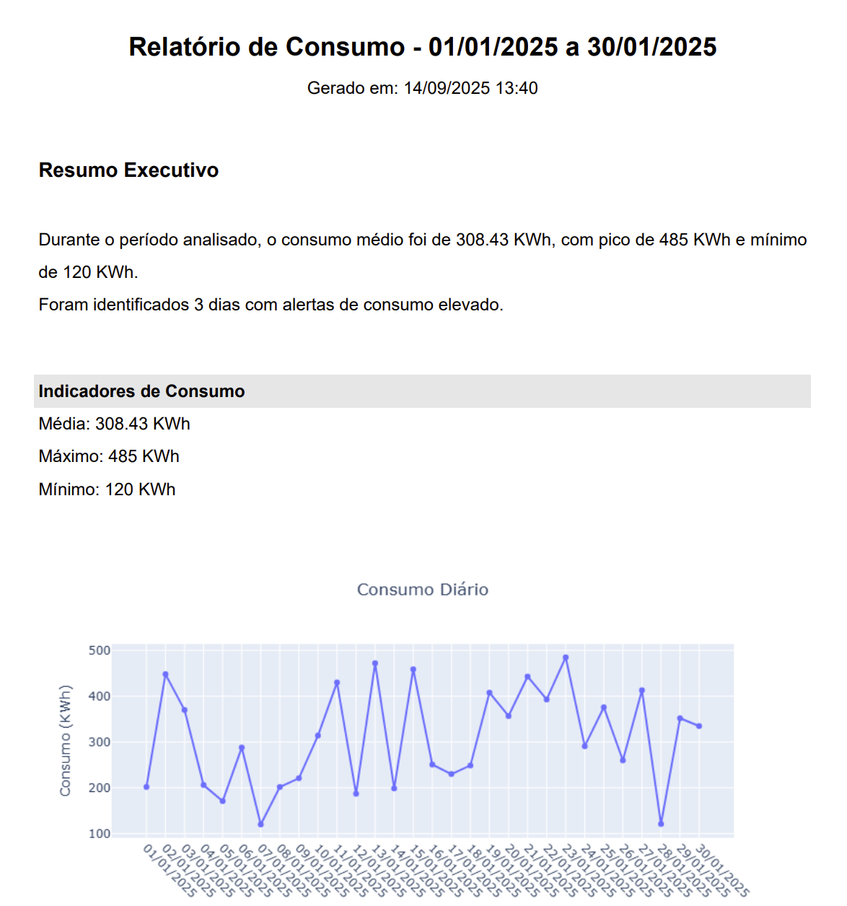
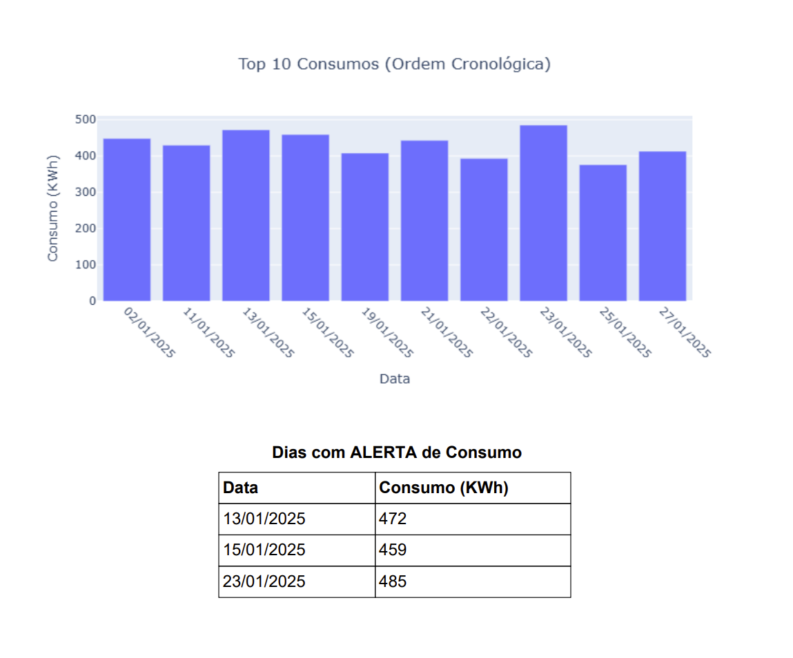

📊 Dashboard de Consumo de Energia
Integração entre automação de relatórios (Geração Excel/PDF + envio por e-mail) e um dashboard interativo em Python (Dash + Plotly). Abaixo estão prints do dashboard e exemplos do PDF gerado — cada imagem tem uma explicação técnica e interpretação dos resultados.
✨ Visão Geral e KPIs

O que você está vendo
- KPIs (top row): Média diária, Máximo e Mínimo — valores calculados sobre o período filtrado. Unidade: kWh.
- DatePicker: selecione o intervalo para recalcular métricas e redesenhar gráficos. O botão "Atualizar" aplica o filtro.
- Gráfico de linha: evolução diária do consumo; a linha tracejada horizontal mostra a média do período.
- Picos isolados acima da média indicam dias de maior demanda — pode ser operação extra, falha em equipamento ou eventos pontuais.
- A média ajuda a identificar desvios: se muitos dias estão acima da média, indica tendência de alta e necessidade de análise.
Ação sugerida: investigar dias com picos (ver tabela de alertas) e correlacionar com logs operacionais/faturamento.
📊 Top 10 Consumos & Tabela de Alertas

O que você está vendo
- Top 10 Consumo Diário: barras dos 10 maiores consumos (aqui mostra em ordem cronológica). Útil para priorizar investigação.
- Tabela de Alertas: lista dos dias marcados como alerta (ex.: >= P90). A linha em rosa indica o dia crítico mais alto.
- Calculamos o
P90(percentil 90) do consumo. Dias com consumo >= P90 são marcados como alerta. - Também calculamos um limite alternativo:
limite = média + 1σ(média + 1 desvio padrão) — usado como referência complementar.
Ação sugerida: priorizar os dias na tabela para análise de causa raiz e gerar medidas corretivas (ex.: redução de carga programada).
📑 Exemplo do Relatório em PDF (Resumo Executivo)

O que o PDF inclui
- Cabeçalho com período analisado e timestamp de geração.
- Resumo Executivo: texto sintetizando média, pico, mínimo e número de dias em alerta — ideal para gestores.
- Indicadores: seção com Média / Máximo / Mínimo exibidos de forma limpa.
- Gráficos: cópia dos gráficos do dashboard (linha de consumo e barras), otimizados para impressão.
Por que isso importa: o PDF permite envio automático para stakeholders sem necessidade de acesso ao dashboard — ótimo para relatórios mensais.
📑 Exemplo do Relatório em PDF (Top e Alertas)

O que está mostrando
- Top 10 consumos apresentados para leitura rápida (priorização).
- Tabela final com os Dias com ALERTA e seus valores, pronta para anexar a ordens de serviço ou comunicar equipes.
Sugestão operacional: anexar essas páginas ao e-mail automático e incluir um pequeno checklist de verificação para cada dia em alerta.
🧾 Trecho de Código (Como é calculado o P90 e os alertas)
# Exemplo em pandas (trecho)
p90 = df['Consumo_KWh'].quantile(0.90)
limite_std = df['Consumo_KWh'].mean() + df['Consumo_KWh'].std()
df['Alerta'] = df['Consumo_KWh'] >= p90
Este trecho calcula o percentil 90 (P90), cria um limite alternativo (média + 1σ) e marca os dias com consumo >= P90 como alerta.
🔗 Links e Próximos Passos
- 📂 Repositório GitHub — código, README, instruções e scripts.
- 🛠️ Próximo passo: integrar previsões (Projeto IA) para alertas preditivos e simular cenários de redução de demanda.